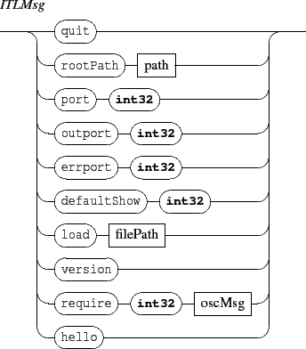

Next: 3. Scene messages
Up: INScore OSC Messages Reference
Previous: 1.1 Address space
Contents
Index
2. ITL messages
ITL messages are messages global to the client application, which address is /ITL. It handles the following messages:

- quit: requests the client application to quit.
- rootPath: rootPath of an Interlude application is the default path where the application reads or writes a file when a relative path is used for this file. The default value is the user home directory. Sending the rootPath message without parameter resets the application path to its default value.
- port, outport, errport: changes the UDP port numbers. port defines the listening port number, outport and errport define the ports used to send messages and error messages. The int32 parameter should be a positive value in the range [1024-49150].
The default port, outport and errport values are 7000, 7001 and 7002.
- defaultShow: changes the default show status for new objects.
The default defaultShow value is 1.
- load: loads a file previously saved using the save message (see section 4 p.
![[*]](crossref.gif) ). Note that the load operation appends the new objects to the existing scene. Whe necessary, it's the sender responsability to clear the scene before loading a file.
). Note that the load operation appends the new objects to the existing scene. Whe necessary, it's the sender responsability to clear the scene before loading a file.
- hello: query the host IP number. The message is intended for ITL applications discovery. Answer to the query has the following format:
IP inPort outPort errPort where IP is sent as a string and port numbers as integer values.
- version: version number request.
Next: 3. Scene messages
Up: INScore OSC Messages Reference
Previous: 1.1 Address space
Contents
Index
Grame - Interlude project [ANR-08-CORD-010]